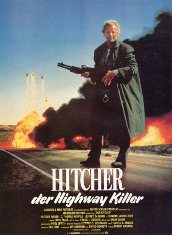

#9006 Hitcher - der Highway Killer
Alternativ: The Hitcher
 
 IMDB-Wertung: 7.3 / 10
IMDB-Wertung: 7.3 / 10  Metascore: 0
Metascore: 0 
Jim Halsey nimmt des nachts einen Anhalter auf der Autobahn mit, der ihn dann mit einem Messer bedroht. Er schafft es, den Wahnsinnigen wieder aus seinem Auto zu bekommen. Allerdings taucht der Killer immer wieder in Jims Nähe auf und tötet immer mehr Menschen. Zuletzt wird schließlich Jim verdächtigt der Mörder zu sein.
Jahr: 1986
Dauer: 100 Minuten
FSK: BPjM Restricted
Land: USA Studio: TriStar PicturesTonspuren: DD5.1 - ,
Untertitel: Englisch, Deutsch,
Auflösung: 1080p (1920x816) Größe: 3584 MB
Genre: Thriller
Regisseur: Robert Harmon
Drehbuch: Eric Red
Soundtrack: Mark Isham
Darsteller:
Datei: X:\FSK18-1900-1999\Hitcher - der Highway Killer (1986, FSKBPjM Restricted, 1920x816).mkv seit 18.05.2018
Festplatte: FSK18
 Es gibt insgesamt 108 Filme in der Gruppe 'FSK18-1900-1999'
Es gibt insgesamt 108 Filme in der Gruppe 'FSK18-1900-1999'